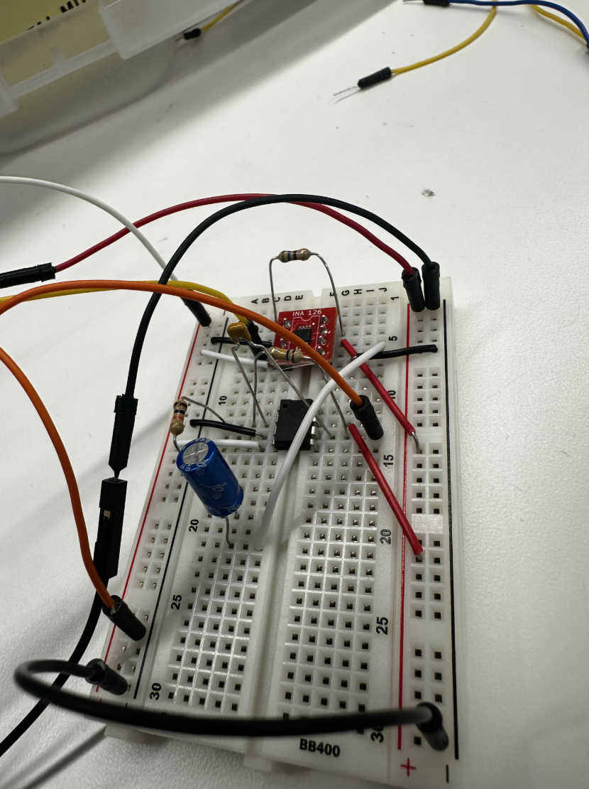
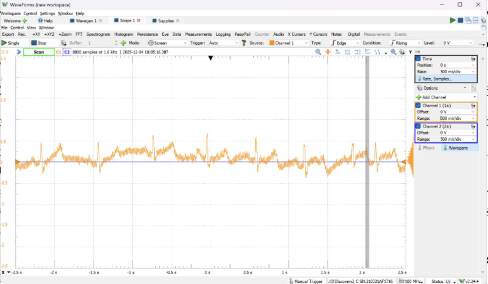

I built a multistage circuit using an instrumentation amplifier (INA126P) and a bandpass filter to analyze and display heartbeat signals. I also included an isolator chip for some extra safety. I learned a lot about troubleshooting in the context of signal processing, as well as analyzing circuits through techniques like drawing Bode plots. The most heartwrenching part of this project was actually connecting the electrodes to myself...but boy was it a relief that my heart kept beating (and that I could see the signals on my laptop!)

The measured heartbeats from our circuit when I attached the electrodes!